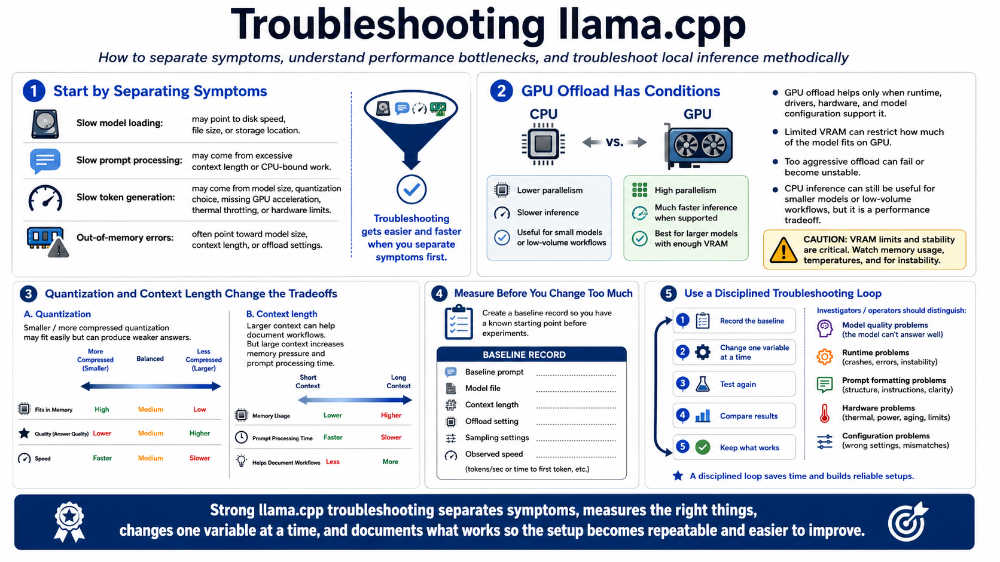

Performance and Troubleshooting
Connecting to LMS... Progress: in progress

Narration
Troubleshooting llama.cpp starts by separating symptoms. Slow model loading may point to disk speed, file size, or storage location. Slow prompt processing may come from excessive context length or CPU-bound work. Slow token generation may come from model size, quantization choice, missing GPU acceleration, thermal throttling, or hardware limits. Out-of-memory errors point toward model size, context length, or offload settings.
GPU offload is helpful only when the runtime, drivers, hardware, and model configuration support it. Too little VRAM may limit how much of the model can run on the GPU. Too aggressive offload can fail or become unstable. CPU inference may still be useful for smaller models or low-volume workflows, but it should be recognized as a performance tradeoff.
Quantization tradeoffs can look like quality problems, speed problems, or both. A very small quantization may fit easily but produce weaker answers. A larger variant may answer better but run too slowly or exceed memory. Context length can also distort results: large context may help document workflows but increase memory pressure and prompt processing time.
Measure before changing too many settings. Keep a baseline prompt, record model file, context length, offload setting, sampling settings, and observed speed. Change one variable at a time. Distinguish model quality problems from runtime, prompt formatting, hardware, and configuration problems. A disciplined troubleshooting loop saves time and creates knowledge you can reuse.